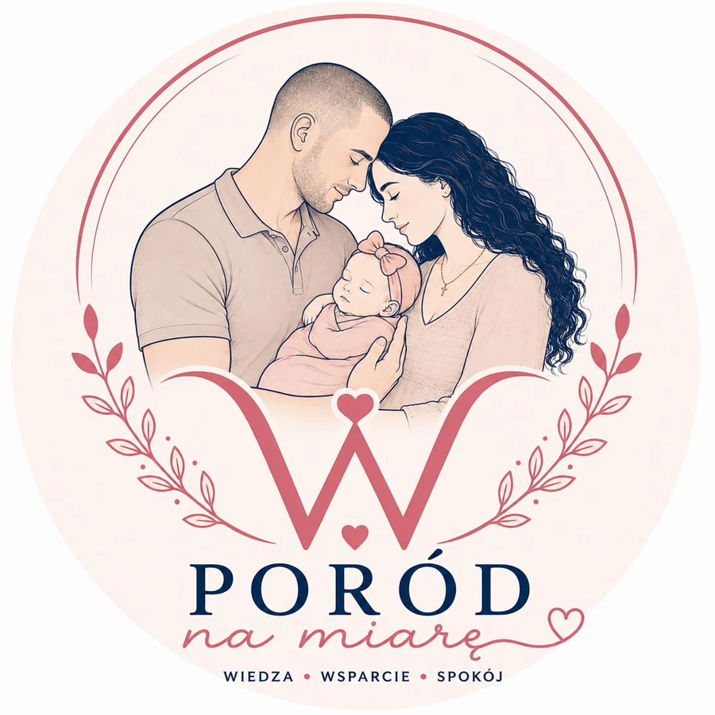

Tata, nie korporacja
Nie jestem lekarzem.
Jestem tatą, który bał się, że czegoś nie dopilnuje.
Nazywam się Michał. Razem z Anną we wrześniu witamy naszą córkę Wiktorię. Ta strona powstała, bo szukałem dla niej narzędzia, którego nie było — i w końcu zbudowałem je sam.
To nie jest historia o firmie. To historia o wieczorze, w którym zrozumiałem, że za kilka tygodni znajdę się w miejscu, gdzie od mojego przygotowania będzie zależeć spokój dwóch najważniejszych dla mnie osób.

Michał i Anna — kilka tygodni przed narodzinami Wiktorii


Posłuchajcie mnie przez chwilę
Dwie minuty o tym, dlaczego powstała ta strona i co chciałbym, żebyście z niej wynieśli.
Nagranie będzie dostępne wkrótce.
Jak to się zaczęło
Kiedy Anna powiedziała mi, że jesteśmy w ciąży, zrobiłem to, co robi większość facetów: zacząłem czytać. Chciałem być przygotowany. Chciałem wiedzieć, co się będzie działo i co mogę zrobić, żeby jej pomóc.
Znalazłem setki artykułów o tym, co czuje kobieta. Poradniki o oddychaniu. Listy rzeczy do torby. I prawie nic o tym, co ma robić ten drugi człowiek w sali — poza „być wsparciem" i „trzymać za rękę".
Potem trafiłem na darmowy szablon planu porodu. Urzędowy formularz z pustymi polami. Usiadłem, żeby go wypełnić — i utknąłem po piętnastu minutach. Bo skąd mam wiedzieć, czy chcę „oksytocynę w III okresie"? Skąd mam wiedzieć, o co w ogóle należy zapytać?
To był moment, w którym zrozumiałem: problemem nie jest brak informacji. Problemem jest to, że nikt nie układa jej w decyzje, które rodzic potrafi podjąć.
Zacząłem więc od zera. Zapoznałem się ze Standardem Organizacyjnym Opieki Okołoporodowej — całym, łącznie z nowelizacją, która weszła w życie w maju 2026. Rozmawiałem z położnymi. Czytałem rekomendacje o opóźnionym odpępnieniu, o kontakcie skóra do skóry, o remifentanylu, o krwi pępowinowej.
I zbudowałem dokument dla siebie i Anny. Jedenaście stron. Przepracowany w pięciu wersjach. Z sekcją o tym, co robić, gdy dziecko trafi na neonatologię. Z zapisem, że jeśli coś pójdzie nie tak — dobro Wiktorii jest ważniejsze niż jakikolwiek punkt naszego planu.
Kiedy skończyłem, pomyślałem o wszystkich innych rodzicach, którzy siedzą teraz nad tym samym pustym formularzem. I o tym, że nie każdy ma tyle wieczorów, żeby rozgryźć to od podstaw.

Znaczenie logo
Dlaczego na logo jest nas troje
To nie przypadek, że w herbie PoródNaMiarę.pl są mama, tata i córka — cała nasza trójka, razem. Zaprojektowałem je świadomie — jako obraz tego, w co wierzę: że poród nie jest wydarzeniem kobiety, przy którym mężczyzna stoi z boku. Jest wydarzeniem rodziny, w którym każdy ma swoje miejsce.
Tata na sali porodowej to nie dekoracja i nie ktoś, kto „trzyma za rękę", bo wypada. To osoba, która zapoznała się ze Standardem Opieki Okołoporodowej razem z partnerką, chodzi z nią do szkoły rodzenia, zna plan porodu na pamięć i potrafi go bronić przed personelem, kiedy ona nie ma już na to siły. Głowa rodziny nie znaczy „ten, który decyduje" — znaczy „ten, który bierze odpowiedzialność za to, żeby wszyscy byli bezpieczni".
Litera W wpleciona w wieniec to Wiktoria — nasza córka, dla której to wszystko powstało. Serduszka nad i pod literą to my — ja i Ania — po dwóch stronach jej imienia, tak jak jesteśmy po dwóch stronach jej życia: ona w centrum, my obok, oboje skupieni na tym samym.
Kiedy widzicie to logo, chcę, żebyście pomyśleli nie o marce, tylko o obrazie, do którego warto dążyć: rodzina, która weszła w poród przygotowana razem — i wyszła z niego jeszcze silniejsza.
Pierwsza kołysanka
„Wiki, już Cię kochamy"
Ta kołysanka powstała specjalnie dla Wiktorii. Choć jeszcze nie ma jej z nami, już teraz może słuchać jej głosu taty i czuć jego miłość. To utwór dla niej — pierwsza kołysanka, którą słyszy jeszcze w brzuchu mamy. ❤️
Nagranie chwilowo niedostępne — spróbujcie odświeżyć stronę.
słowa i wykonanie: Michał, dla Wiktorii · 2026
Dlaczego robię to inaczej
Nie jestem lekarzem — i mówię o tym wprost
Plan porodu nie jest dokumentem medycznym. To zapis Waszych preferencji, przekazywany personelowi. Nie stawiam diagnoz i nigdy nie będę. Robię coś innego: porządkuję decyzje tak, żebyście nie musieli podejmować ich w trakcie skurczów. Każda opcja w kreatorze ma oparcie w obowiązującym standardzie opieki.
Tata nie jest tu dodatkiem
W moim kreatorze partner ma konkretną rolę: wie, o co pytać, czego pilnować i co zrobić, gdy mama nie może mówić za siebie. To nie jest miły gest — Standard Opieki Okołoporodowej wprost przewiduje udział ojca w edukacji przedporodowej, bo sprzyja to więzi i wspiera zdrowie psychiczne kobiety.
Piszę też o rzeczach, które są niewygodne
O tym, że bankowanie krwi pępowinowej stoi w konflikcie z opóźnionym odpępnieniem. O tym, że opłaty za poród rodzinny bywają bezprawne. O tym, że znieczulenie zależy od tego, czy anestezjolog nie jest akurat na bloku operacyjnym. Nie mam sponsora, któremu mogłoby to przeszkadzać.
Odpowiadam osobiście
Nie ma tu działu obsługi klienta ani systemu ticketów. Jest jeden e-mail i jedna osoba, która na niego odpisuje. Jeśli coś w Waszym planie wymaga poprawki — piszcie. To dla mnie ważne, żeby dokument, który weźmiecie do szpitala, był naprawdę Wasz.
Zwykłe dni tej ciąży
Miłość jest w drobiazgach
Nie w wielkich gestach, tylko w dłoni na brzuchu, we wspólnej niedzieli, w spokojnym popołudniu na rynku. Kliknij zdjęcie, żeby je powiększyć.
Na czym opieram to, co tworzę
Nie na intuicji i nie na tym, „co się zwykle robi". Na dokumentach, które można sprawdzić.
2026
Standard Opieki Okołoporodowej (Dz.U. 2025 poz. 1525) obowiązujący od 7 maja
13
kroków kreatora obejmujących cały poród i pierwsze doby
80+
gotowych preferencji do zaznaczenia, każda z oparciem w standardzie
12
artykułów w bazie wiedzy — bezpłatnych, bez rejestracji
Co dostajecie ode mnie
Dokument, który wręczycie położnej przy przyjęciu. Napisany tak, żeby personel przeczytał go w minutę i wiedział, co jest dla Was ważne — bez tłumaczenia w trakcie skurczów.
- ✓Warunki porodu i osoby obecne
- ✓Łagodzenie bólu — kolejność metod
- ✓Scenariusz cięcia cesarskiego
- ✓Pierwsze godziny noworodka
- ✓Krew pępowinowa i profilaktyka
- ✓Połóg i wsparcie laktacyjne
Klauzula, której nie usunę z żadnego planu
W każdym dokumencie jest zapis, że zdrowie i życie dziecka oraz matki są nadrzędne wobec każdego punktu planu. Plan porodu to nie lista żądań. To sposób na to, żeby w spokojnych warunkach powiedzieć, co jest dla Was ważne — z pełną zgodą na wszystko, co okaże się konieczne.

Czekając na Wiktorię
Kilka kadrów z ostatnich tygodni
Nie jesteśmy korporacją — jesteśmy rodziną, która sama przechodzi przez to wszystko. Oto kilka chwil sprzed narodzin naszej córki.


Coś, czego nie znajdziecie w żadnym planie porodu
Kiedyś balansowałem dla jednej kobiety. Dziś robię to dla dwóch.


Od lat crossfit, bieganie i zdrowy styl życia są częścią tego, kim jestem — a stanie na rękach stało się moim prywatnym sposobem mówienia „kocham cię" bez słów. Wiele lat temu ćwiczyłem to sam, wizualizując moment, w którym unosząc się na rękach, wręczę wyjątkowej kobiecie różę trzymaną w ustach. Kilka miesięcy przed tym, jak dowiedzieliśmy się o Wiktorii, w końcu zrobiłem to naprawdę — dla Anny.
W drugim trymestrze ciąży, przed zamkiem w Krasiczynie, powtórzyłem ten sam gest — tym razem wiedząc, że nie balansuję już tylko dla jednej osoby. Ta sama dyscyplina, którą wkładam w trening, dziś służy czemuś ważniejszemu: przygotowaniu do porodu. Bo bezpieczeństwo dwóch najważniejszych kobiet w moim życiu wymaga tej samej determinacji, co utrzymanie równowagi.
Wideo, nie tylko tekst
Zobaczcie mnie, nie tylko czytajcie
Przygotowuję krótkie nagranie, w którym opowiadam tę historię własnym głosem — i na końcu mówię kilka słów wprost do Anny i Wiktorii, na pamiątkę tych tygodni. Materiał pojawi się tutaj, gdy tylko będzie gotowy.
Nagranie wideo pojawi się tutaj wkrótce.
Zanim zaczną się skurcze
Zróbcie to dziś wieczorem, spokojnie, przy herbacie
Wypełnienie kreatora zajmuje kilkanaście minut. Postęp zapisuje się sam, więc możecie wrócić w każdej chwili. Podgląd jest darmowy — płacicie dopiero, gdy zdecydujecie się pobrać gotowy dokument.
Trzymam kciuki za Wasz poród. Naprawdę.
— Michał, tata Wiktorii
Pytania, które najczęściej do mnie trafiają
Kto tworzy plany porodu na PoródNaMiarę.pl?
Serwis prowadzi Michał — tata, który przygotował plan porodu dla własnej córki Wiktorii. Nie jestem lekarzem ani położną, a produkty mają charakter organizacyjny i edukacyjny. Każda opcja w kreatorze opiera się na Standardzie Organizacyjnym Opieki Okołoporodowej oraz aktualnych rekomendacjach.
Czy plan porodu przygotowany przez osobę bez wykształcenia medycznego jest wiarygodny?
Plan porodu nie jest dokumentem medycznym, lecz zapisem preferencji rodziców przekazywanym personelowi. Wartością nie jest diagnoza, tylko uporządkowanie decyzji zgodnie z obowiązującym standardem opieki, tak aby rodzice nie musieli formułować ich w trakcie skurczów.
Czy jesteście już po porodzie?
Wiktoria przyjdzie na świat we wrześniu 2026. Plan porodu, który znajdziecie w kreatorze, to ten sam dokument, który przygotowałem dla Anny i siebie — sprawdzany w praktyce, nie tylko opisany w teorii.
Czy PoródNaMiarę.pl to firma czy jednoosobowy projekt?
To projekt jednej osoby. Nie ma tu zespołu marketingu ani działu obsługi klienta — jest jeden twórca i jeden adres e-mail, na który sam odpisuję.
PoródNaMiarę.pl prowadzi osoba fizyczna. Produkty mają charakter organizacyjny i edukacyjny — nie stanowią porady medycznej i nie zastępują konsultacji z lekarzem lub położną. Treści opierają się na Standardzie Organizacyjnym Opieki Okołoporodowej (Dz.U. 2025 poz. 1525).